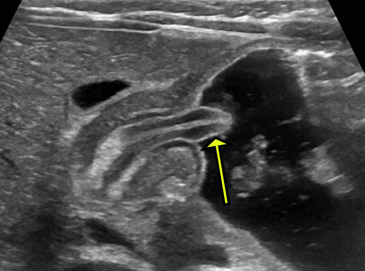

Ficha del catálogo
Estenosis hipertrófica del píloro
- Sistema
- Digestivo
- Modalidad
- US
- Región
- Píloro / antro gástrico
- Dificultad
- Intermedio
Es el engrosamiento del músculo pilórico que obstruye el vaciamiento gástrico en el lactante pequeño, con un pico de presentación entre la tercera y la sexta semana de vida. Se manifiesta con vómito no bilioso que se vuelve progresivo y en proyectil, avidez por el alimento y pérdida de peso. La alteración metabólica típica es una alcalosis con hipocloremia e hipopotasemia.
Técnica
El ultrasonido es el estudio diagnóstico de elección y evita la radiación en un paciente muy vulnerable. Se explora con transductor lineal de alta frecuencia, con el lactante en decúbito supino o en decúbito lateral derecho, lo que desplaza el contenido gástrico hacia el antro y facilita la observación del canal. Se puede ofrecer una toma pequeña de líquido para ver en tiempo real el paso o la ausencia de paso del contenido.
Qué observar
- Grosor de la capa muscular del píloro, medido en la pared más perpendicular al haz
- Longitud del canal pilórico en el plano longitudinal
- Ausencia de relajación y de paso de contenido gástrico al duodeno durante varios minutos de observación
- Distensión gástrica con contenido retenido y ondas peristálticas vigorosas que se detienen en el píloro
- Aspecto en diana en el corte transversal, con el músculo hipoecogénico rodeando la mucosa ecogénica
- Impronta del píloro engrosado sobre el antro, que produce el aspecto de hombro o de cuello uterino
Hallazgos
El píloro aparece alargado y con la capa muscular claramente engrosada, hipoecogénica, y con la mucosa central ecogénica y redundante. Como referencia práctica se consideran anormales un grosor muscular superior a unos 3 mm y una longitud del canal superior a unos 15 a 17 mm, si bien las cifras deben interpretarse junto con la ausencia de vaciamiento observada en tiempo real y con la edad del paciente. El estómago está distendido y muestra peristalsis intensa que no logra vencer el obstáculo.
Perlas
La medición aislada engaña. Un píloro que en un momento parece engrosado pero que se relaja y deja pasar contenido corresponde a un piloroespasmo y no requiere cirugía, por lo que conviene observar durante varios minutos antes de concluir. Si el estudio es dudoso lo razonable es repetirlo en unas horas o al día siguiente, ya que la hipertrofia progresa y se hace evidente.
Diagnóstico diferencial
- Piloroespasmo
- El canal se relaja de forma intermitente y permite el paso de contenido, con medidas en el límite y sin progresión.
- Reflujo gastroesofágico
- Vómito no proyectil con vaciamiento gástrico conservado y píloro normal.
- Malrotación con vólvulo del intestino medio
- Vómito bilioso, signo del remolino de los vasos mesentéricos y posición anómala de la unión duodenoyeyunal.
- Atresia o membrana duodenal
- Obstrucción distal al píloro, con doble burbuja y presentación habitualmente neonatal.
- Alergia a proteína de leche
- Vómito y sangre en heces con píloro normal y engrosamiento inespecífico de asas.
Simuladores
- Píloro contraído de forma transitoria en el momento de la exploración
- Medición oblicua del músculo, que sobreestima el grosor real
- Antro con pliegues prominentes por contenido retenido
Por modalidad
- US
- Método de elección por su exactitud, su carácter dinámico y la ausencia de radiación en el lactante
- RX
- La radiografía simple solo muestra distensión gástrica y escaso gas distal, y el estudio con bario ha quedado en segundo plano
- TC
- No tiene indicación en este cuadro por la radiación y por la ausencia de ventaja diagnóstica
Protocolo
Ultrasonido con transductor lineal de 10 a 15 MHz en decúbito supino y en decúbito lateral derecho, con planos longitudinal y transversal del canal pilórico. Se mide el grosor de la capa muscular y la longitud del canal, y se observa el vaciamiento durante varios minutos, ofreciendo líquido si es necesario. Conviene vaciar el estómago muy distendido con sonda cuando el aire impide ver el píloro.
Clasificación
Errores frecuentes
- Concluir el diagnóstico con una sola medición sin observar el vaciamiento en tiempo real
- Medir en un plano oblicuo y sobreestimar el grosor muscular
- No repetir el estudio en un caso limítrofe con clínica muy sugerente

estenosis pilorica lactante vomito no bilioso ultrasonido piloro pediatria signo de la diana